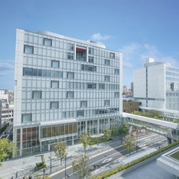

今年のテーマは、「」。
キャンパスが足立区・北千住に移転して3年目の開催となる旭祭。地域との距離もどんどん密接になってきていますが、そんな今年の旭祭のテーマは「」です。コメントコメントコメントコメントコメントコメントコメントコメントコメント・・・・・・・
声優スペシャルトークライブ
今年は私たちのキャンパスに、なんとアニメ「ラブライブ！」高坂穂乃果役の新田恵海さん、星空凛役の飯田里穂さんがいらっしゃいます！
DJ同好会 クラブイベント
新生サークル「東京電機大学DJ同好会 FRENZY NETWORK」が満を持しての初イベントを第3回旭祭で解禁！ゲストには日本のクラブシーンを騒がすあのHommarjuさんがいらっしゃいます！いつもの教室が1日限りのダンスフロアに！

なんかイベントおしえてください。
たぶんあるとおもわれるもの
音楽系団体ライブ、コンサート
各サークル展示
研究室公開
トレジャーハンター（そんなんあったような）